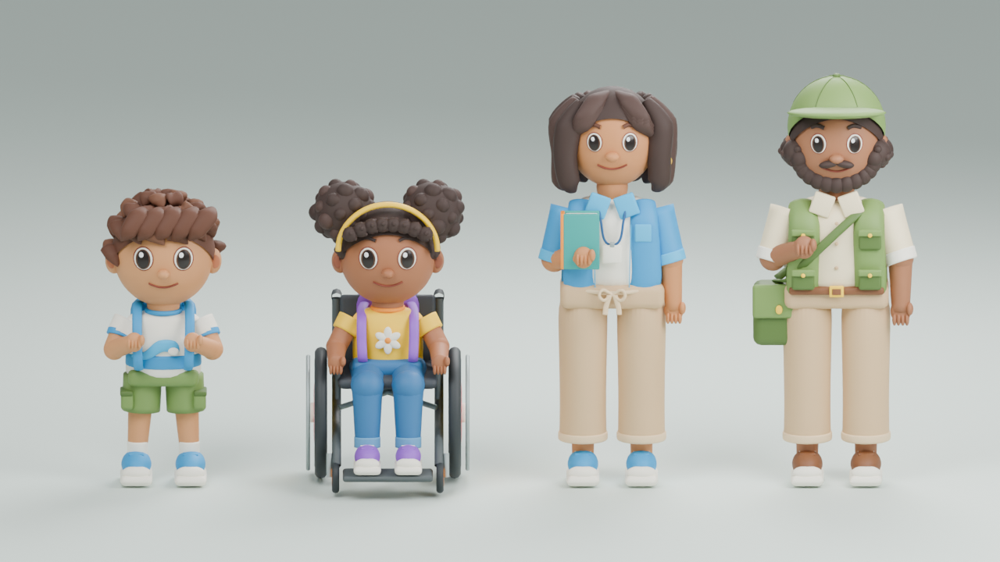
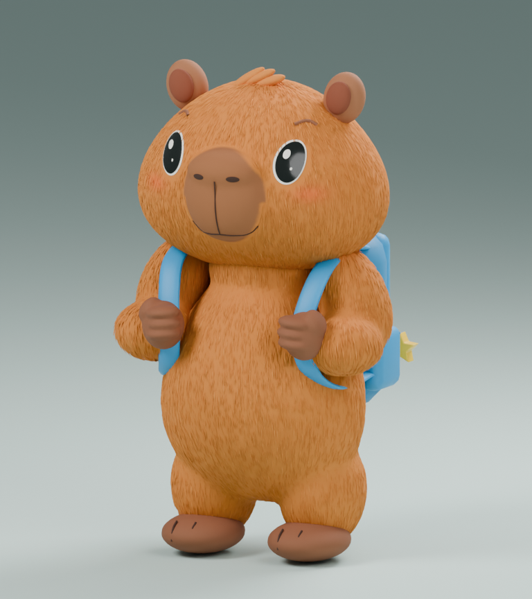
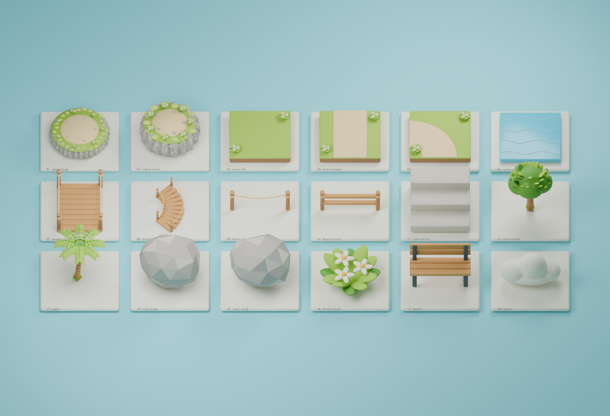
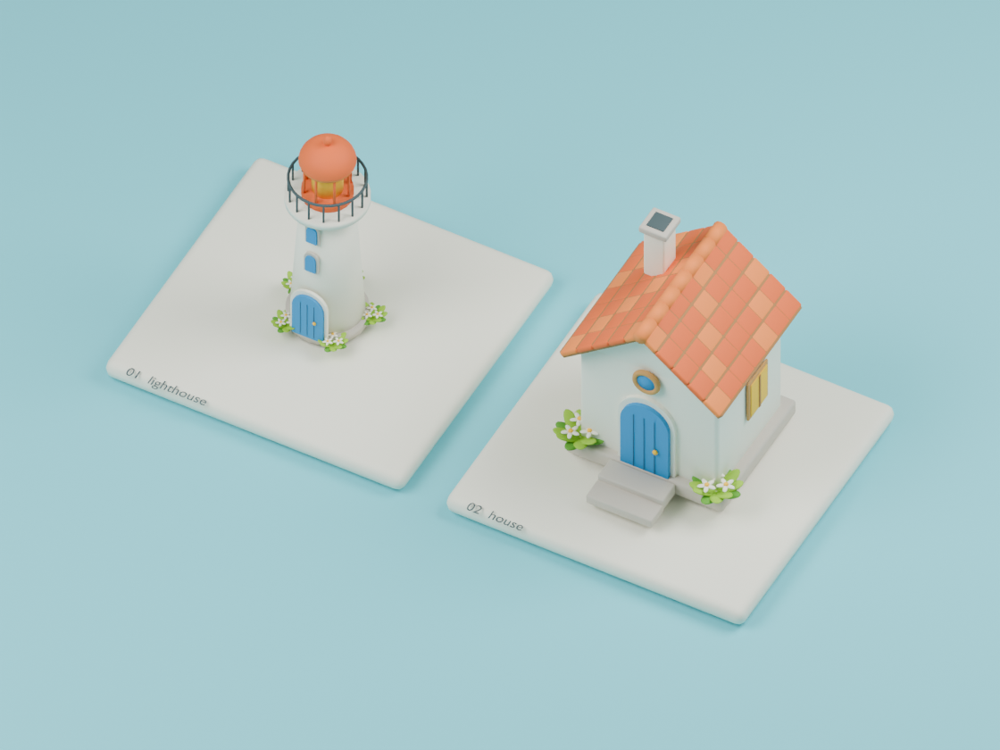
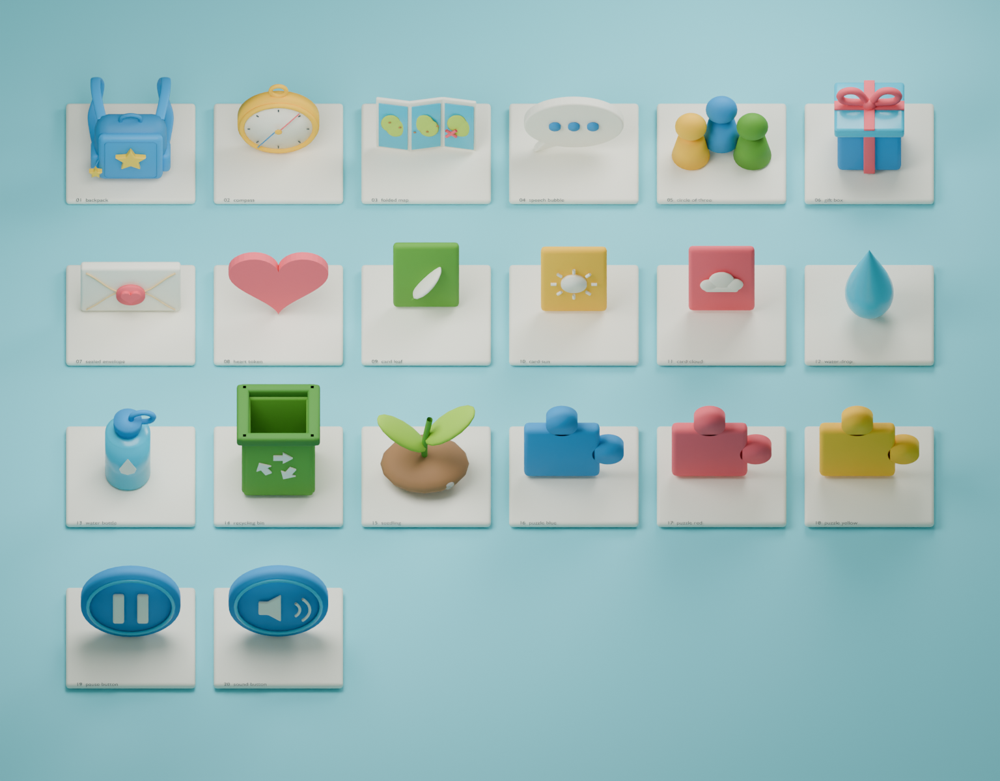

LA ISLA DE LOS ACUERDOS · PRODUCCIÓN POR ETAPAS
Modelos reales, listos para revisar.
Mascota + 40 piezas de mundo/objetos + 4 NPC nuevos. Todos los renders proceden de modelos exportados; las referencias artísticas se enlazan aparte. Fecha: 2026-09-17.
Nuevo: primera pasada de rigs y animaciones. Revisar 5 personajes y 25 clips → Los modelos estáticos de abajo se conservan como referencia. Los rigs ya se pueden reproducir; todavía faltan pulido de articulaciones, cara/dedos, optimización móvil, interacciones y pruebas en el motor. Las colisiones siguen siendo propuestas no integradas.
Nuevo · Cuatro personajes NPC
Personajes de las dos hojas técnicas. Abre «Cuatro vistas» para inspeccionar los renders o «Ver 3D» para girar el GLB real. Las imágenes también se pueden consultar sin conexión.
Cada galería incluye BLEND, GLB, ficha y verificación. Ropa, pelo y accesorios separados; todavía sin esqueleto, pesos ni expresiones animadas. Las alturas de montaje son aproximadas y no constituyen una medición de las ilustraciones.
Ver el elenco completo a escala relativa

Comparación de los cuatro modelos con sus alturas de montaje; no se han normalizado individualmente.01 · Capibara v005

Abdomen, dedos, cara y correas afinados.
02 · Kit de isla — 18 piezas
Referencia aprobada del kit. Las piezas están escaladas individualmente en esta lámina para inspección: no representa sus tamaños relativos dentro del juego.

Terreno, caminos, vegetación, puentes, agua y mobiliario. Geometría estática; agua y nubes aún no tienen animación.
03 · Faro y casa
Referencia aprobada de arquitectura. Fachadas estáticas, sin interiores ni puertas animadas.

Versiones iniciales exportables. No son réplicas exactas de las ilustraciones.
04 · Objetos interactivos — 20 piezas
Referencia aprobada de objetos. Son las piezas visuales: recogida, apertura, decisiones, feedback y accesibilidad se implementan después.

Inspección normalizada por objeto; no escala de juego. Los símbolos 3D de pausa/sonido no sustituyen botones HTML accesibles.
Siguiente punto de trabajo
Revisar los cuatro NPC nuevos; después preparar topología, rig y animaciones. La aprobación de la entrega anterior queda registrada. Integrar solo tras verificar el rendimiento en el teléfono objetivo.
Plan completo y comandos de reanudación